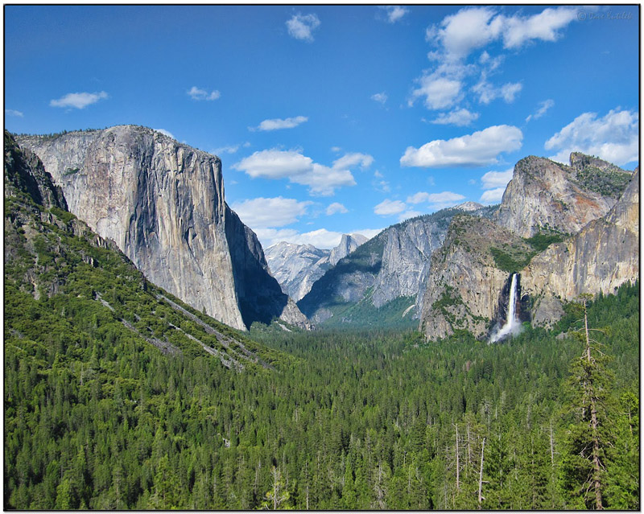

National Parks – America's Natural Legacy
Yosemite National Park

Yosemite is not just a great valley, but a shrine to human foresight, the strength of granite, the power of glaciers, the persistence of life, and the tranquility of the High Sierra. First protected in 1864, Yosemite National Park is best known for its waterfalls, but within its nearly 1,200 square miles, you can find deep valleys, grand meadows, ancient giant sequoias, a vast wilderness area, and much more.